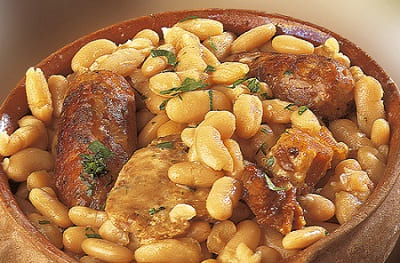

France our neighbor is a country where you can do many activities, at day and at night, even the sun is not very frecuent at north.
There, as in Spain, food is one of the pillars of society, even more so than in Spain, since there it is much more associated with family life.
Restaurants are much in demand against bars or pubs that are frequented much less. These last ones from a certain age not go there.
Normally there isn´t bar or pub in towns with less of 10k population.
If they want to take something they take it at home or at the house of friends or neighbors but there is no culture to mingle with people in the villages of France.
It may be that in some large towns with more than 3,000 inhabitants there are bars but it work as a restaurant during the week and at weekend at night it could be a pub.
Another of the coincident points with Spain is the sport. France is one of the best sport countries in the world, with numerous trophies in all sports and modalities, both winter as summer.
Leaders in the medal and creators of numerous sports, host of international competitions.
The most important the Grand Slam tennis, Rolland Garros where our Nadal is the undisputed leader and the Tour de France, the competition reigns supreme in cycling where Spain has achieved many trophies, with Indurain and Contador at the top.
There as in Spain soccer is the competition par excellence, although rugby is also very popular. Each city and town has a soccer field and a sports center, as in Spain.
Although our country has had very good facilities in the last two decades with a good list of sport people , hence their performance where they stand out also in team sports such as handball and volleybal, both men and women.
 In the area of the night they are more like the countries of the north, at 7 pm they usually have dinner and at 10 at night on a normal day they are already in bed.
News usually start 2 hours earlier than here, usually starts at 1 pm. In this order of life, the places for dinner or have fun open most of them after 8 pm, although for the French from 7 is already night.
Just as in Spain you drink alcohol at night: Prices are usually very high in drinks of high graduation since they are heavily taxed.
A bottle that cost about 10 euros in the supermarket usually costs 20 or 25 euros and the bottle in a nightclub or bar goes from 60 euros to 125 euros and there are people who pay for it.
Then they have prices that can triple the price here, however the net income discounting their taxes do not reach twice as much here.
Although a cup costs from 7 euros up to 20 euros in selected discos the French people are more than wines and beers as here in Spain, being the wine at dinner the star drink.
France has a reputation for good wine as in Spain, although I prefer our country.
The quality of the French grape is better than the Spanish but the climate is not the best, so its grapes tend to be larger and the flavour less concentrate.
And the wine does not reach the flavor we have here, especially in the northern part of the peninsula. But for what is in Europe in general is one of the best wines.
Together with Spain and Italy are one of the countries that exports more wine from the world. Although Spain still has to gain a lot of ground since our wine does not come as much from our borders as theirs.
In the area of the night they are more like the countries of the north, at 7 pm they usually have dinner and at 10 at night on a normal day they are already in bed.
News usually start 2 hours earlier than here, usually starts at 1 pm. In this order of life, the places for dinner or have fun open most of them after 8 pm, although for the French from 7 is already night.
Just as in Spain you drink alcohol at night: Prices are usually very high in drinks of high graduation since they are heavily taxed.
A bottle that cost about 10 euros in the supermarket usually costs 20 or 25 euros and the bottle in a nightclub or bar goes from 60 euros to 125 euros and there are people who pay for it.
Then they have prices that can triple the price here, however the net income discounting their taxes do not reach twice as much here.
Although a cup costs from 7 euros up to 20 euros in selected discos the French people are more than wines and beers as here in Spain, being the wine at dinner the star drink.
France has a reputation for good wine as in Spain, although I prefer our country.
The quality of the French grape is better than the Spanish but the climate is not the best, so its grapes tend to be larger and the flavour less concentrate.
And the wine does not reach the flavor we have here, especially in the northern part of the peninsula. But for what is in Europe in general is one of the best wines.
Together with Spain and Italy are one of the countries that exports more wine from the world. Although Spain still has to gain a lot of ground since our wine does not come as much from our borders as theirs.
Then, except for the issue of leaving, they get more out of the house because they tend to have a more home-based mentality, except cosmopolitan cities like Lyon and Paris where people come out more.
We have a way of living quite similar, and I would say that France is like the nexus between the mentality of the north and the south, where the two mentalities coexist.
Being more similar to us in the southern part would be considered very capital and there is everything like in any Spanish city with the benefit that the temperature is softer than here.
In my opinion better weather than here.
 In addition another strong point of France is the art and the sciences, where they emphasize in fields as diverse as the engineering and the art or the education.
It is noteworthy the cinemas there that has numerous grants state for those under 25 and in some cases for the unemployed.
I remember entering the cinema for 4.5 euros when here was the session at 7 to 10 euros. Prices in adults are similar to those here.
I remember Gaumont Pathe cinenma of Toulouse, where the quality of the installation was high and the cinema was full every day.
In addition cinemas have numerous loyalty discounts as a free entry every 5 times that you go and also you can see the movies in original version for the same price.
This really is a good measure, since the films in the original version say much more of the film than when translated, and it foments the learning of English.
But if you go to a cinema in France keep in mind that the films start at half an hour from the scheduled start because they have a huge advertising that makes the tickets are so cheap.
In addition another strong point of France is the art and the sciences, where they emphasize in fields as diverse as the engineering and the art or the education.
It is noteworthy the cinemas there that has numerous grants state for those under 25 and in some cases for the unemployed.
I remember entering the cinema for 4.5 euros when here was the session at 7 to 10 euros. Prices in adults are similar to those here.
I remember Gaumont Pathe cinenma of Toulouse, where the quality of the installation was high and the cinema was full every day.
In addition cinemas have numerous loyalty discounts as a free entry every 5 times that you go and also you can see the movies in original version for the same price.
This really is a good measure, since the films in the original version say much more of the film than when translated, and it foments the learning of English.
But if you go to a cinema in France keep in mind that the films start at half an hour from the scheduled start because they have a huge advertising that makes the tickets are so cheap.
Toulouse was the city chosen by me to go to find work and improve my French level, not only because of the good atmosphere that the city has but also because of family ties.
But regardless of that, and from the short distance to Spain, Toulouse enjoys a very good climate and is a university city with a very high youth rate.
In addition the prices are cheaper than in the north of France.
In addition to having a good public transportation system to move you both day and night, as it has owl buses for the city, the train network works very well and parking in the city is not lacking.
There are many rents and flats to share, although once you have started September and the students' class season it is more difficult to get a flat to share and prices go up.
Toulouse is a city that grows in population during the course being able to reach 1 million and a half of inhabitants of residents since it counts on numerous students and additional in the area.
In the surrounding villages they usually dominate houses and chalets and large urbanizations.
Most Frenchmen like the quiet and get away from the noise and the traffic.

The French cuisine is quite good, as the Spanish having variety of dishes and quite a few of the Mediterranean diet.
The most popular dish in Toulouse is the cassoulet which is similar to the "Asturian Fabada" from here alone that instead of black pudding or tallow is usually thrown the typical sausage there.
There is usually done on weekends and also eat pretty duck that here is not eaten just since we associate it more with a company animal or the animal which enjoy the view in the ponds or parks of Spain.
Duck meat is much stronger than chicken, something between rabbit and chicken. Here we eat a lot of rabbit and thereI rarely saw it, although it hunts as much as in Spain.
Milk is pretty good and the cheeses too. In fact there represent one more dish in the food that usually corresponds with the first one, in which cheeses and pates are eaten.
The pate of there is usually of duck or pig, since the famous pate of goose is too expensive to eat daily.
The vegetables are quite good and the fruits also since it rains a lot and also it is sunny, being very indicated the climate for a great variety of species.
Tomatoes for example are quite good and have many varieties.
By using this site you agree to our Terms and Conditions. Please Accept these before using the site.
© 2016 - All Rights Reserved - Diseñada por Sergio López Martínez
El sitio se mantiene gracias a la publicidad, por favor Desactiva Adblock para seguir navegando
He desactivado Adblock![[Valid RSS]](https://www.onepointsync.com/wp-content/uploads/2016/08/valid-rss-rogers.png "Validate my RSS feed")